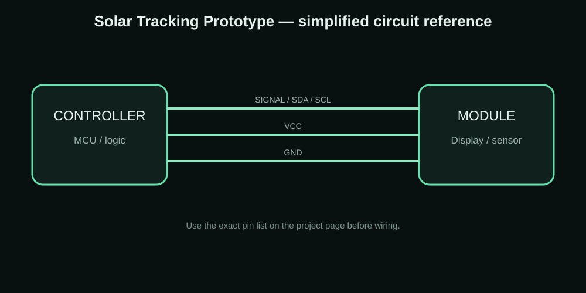

SOLAR • SENSOR • SERVO
Cardboard Solar Tracking Prototype
A school-friendly cardboard solar tracking prototype that uses sensors and a servo mechanism to follow the stronger light direction.
MY PROJECT / REFERENCE IMAGE
CONNECTION / CIRCUIT REFERENCE

WHY I MADE IT
The idea behind the project
I wanted a simple physical model that makes the idea of solar tracking easy to see. Cardboard is useful for the first prototype because the mechanism can be changed quickly before making a permanent enclosure.
This page is written as a build record: the goal is to explain what the project is, how the parts are connected, what to test and where the design can be improved.
Components I used
| Component | Purpose |
|---|---|
| Small solar panel | Energy source/demo target |
| Light sensors | Compare light direction |
| Servo motor | Moves the panel mechanism |
| Microcontroller | Reads sensors and controls servo |
| Cardboard/plywood base | Mechanical prototype |
Connections
| Connection | Details |
|---|---|
| Light sensors | Connect to the controller inputs used by the tracking sketch |
| Servo signal | Connect to a PWM-capable controller pin |
| Servo power | Use a suitable supply; don't overload the controller pin |
| Solar panel | Mounted on the moving cardboard/plywood structure |
How I built and tested it
- Place light sensors so they see different directions.
- Read the sensor values.
- Compare the left/right or top/bottom readings.
- Move the servo toward the stronger light direction.
- Stop or slow the movement when the readings become close.
- Repeat continuously while the system is powered.
Problems, limits and things to check
The mechanical structure needs to move freely without making the servo fight the cardboard. Sensor placement is also important; if both sensors receive almost identical light all the time, the tracker will have little reason to move.
What this project can teach you
- School demonstrations
- Solar energy projects
- Servo control
- Sensor comparison
- Cardboard prototyping
Downloads
The project ZIP keeps the available project resources together. For a new build, check the code, wiring and board pinout before uploading.
Download Project ZIPAdvertisement